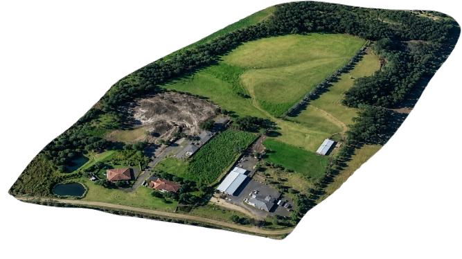

Bom dia, boa tarde, boa noite, seja lá o horário que você está vendo este blog! Me chamo Gabriel de Oliveira Masepa. A imagem logo abaixo é uma visualização via satélite (melhorada por inteligência artificial) do lugar onde vivi a maior parte da minha vida. Foi onde passei minha infância, sendo para mim um lugar extremamente memorável e especial — onde eu fazia de tudo: dirigia trator, brincava com as vacas e corria de um lado para o outro.

Por: Gabriel Masepa